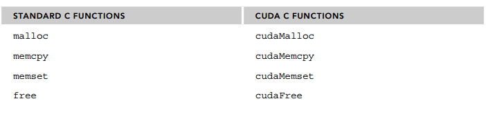

CUDA Programming Model¶
the CUDA programming model provides the following special features to harness the computing power of
GPU architectures.
- A way to organize threads on the GPU through a hierarchy structure
- A way to access memory on the GPU through a hierarchy structure
In C parallel programming, you must manage your threads explicitly using either pthreads or OpenMP techniques. CUDA exposes a thread hierarchy abstraction to allow you to control thread behavior. As you walk through examples in this book, you will see that this abstraction delivers superior scalability for parallel programming. At the hardware level, being able to understand how threads are mapped to cores may help improve performance.
Managing Memory¶


Knowing how to organize threads is a critical part of CUDA programming. CUDA exposes a thread hierarchy abstraction to enable you to organize your threads. This is a two-level thread hierarchy decomposed into blocks of threads and grids of blocks, as shown in Figure

All threads spawned by a single kernel launch are collectively called a grid. All threads in a grid share the same global memory space. A grid is made up of many thread blocks. A thread block is a group of threads that can cooperate with each other using:
- Block-local synchronization
- Block-local shared memory
Threads from different blocks cannot cooperate.
Threads rely on the following two unique coordinates to distinguish themselves from each other:
- blockIdx (block index within a grid)
- threadIdx (thread index within a block)
These variables appear as built-in, pre-initialized variables that can be accessed within kernel functions. When a kernel function is executed, the coordinate variables blockIdx and threadIdx are assigned to each thread by the CUDA runtime. Based on the coordinates, you can assign portions of data to different threads.
ACCESS GRID/BLOCK VARIABLES FROM THE HOST AND DEVICE SIDE¶
It is important to distinguish between the host and device access of grid and block variables. For example, using a variable declared as block from the host, you define the coordinates and access them as follows: block.x, block.y, and block.z On the device side, you have pre-initialized, built-in block size variable available as: blockDim.x, blockDim.y, and blockDim.z In summary, you define variables for grid and block on the host before launching a kernel, and access them there with the x, y and z fields of the vector structure from the host side. When the kernel is launched, you can use the pre-initialized, built-in variables within the kernel.
host side access variable like —> grid,block,grid.x,block.x
device side access variable like —> gridDim,blockDim,blockIdx.x,threadIdx.x
#include <stdio.h>
__global__ void helloFromGPU(void)
{
printf("hello world from GPU (block thread)%d,%d!\n",blockIdx.x,threadIdx.x);
printf("blockdim %d,%d,%d\n",blockDim.x,blockDim.y,blockDim.z);
printf("griddim %d,%d,%d\n",gridDim.x,gridDim.y,gridDim.z);
}
int main(int argc, char const *argv[])
{
printf("hello world from cpu\n");
dim3 grid(3);
dim3 block(2);
printf("block %d,%d,%d\n",block.x,block.y,block.z);
printf("grid %d,%d,%d\n",grid.x,grid.y,grid.z);
helloFromGPU<<<grid,block>>>();
cudaDeviceReset();
//cudaDeviceSynchronize();
return 0;
}
defineGridBlock.cu—>when the block size is altered, the grid size will be changed accordingly
#include "../common/common.h"
#include <cuda_runtime.h>
#include <stdio.h>
/*
* Demonstrate defining the dimensions of a block of threads and a grid of
* blocks from the host.
*/
int main(int argc, char **argv)
{
// define total data element
int nElem = 1024;
// define grid and block structure
dim3 block (1024);
dim3 grid ((nElem + block.x - 1) / block.x);
printf("grid.x %d block.x %d \n", grid.x, block.x);
// reset block
block.x = 512;
grid.x = (nElem + block.x - 1) / block.x;
printf("grid.x %d block.x %d \n", grid.x, block.x);
// reset block
block.x = 256;
grid.x = (nElem + block.x - 1) / block.x;
printf("grid.x %d block.x %d \n", grid.x, block.x);
// reset block
block.x = 128;
grid.x = (nElem + block.x - 1) / block.x;
printf("grid.x %d block.x %d \n", grid.x, block.x);
// reset device before you leave
CHECK(cudaDeviceReset());
return(0);
}
nvcc defineGridBlock.cu -o defineGridBlock
./defineGridBlock
grid.x 1 block.x 1024
grid.x 2 block.x 512
grid.x 4 block.x 256
grid.x 8 block.x 128
Data Synchronize


VERIFYING KERNEL CODE¶
Now that you have written your kernel, how do you know if it will operate properly? You need a host function to verify the result from the kernel.
void checkResult(float *hostRef, float *gpuRef, const int N){
double epsilon = 1.0E-8;
int match = 1;
for (int i = 0; i < N; i++) {
if (abs(hostRef[i] - gpuRef[i]) > epsilon) {
match = 0;
printf("Arrays do not match!\n");
printf("host %5.2f gpu %5.2f at current %d\n",
hostRef[i], gpuRef[i], i);
break;
}
}
if (match) printf("Arrays match.\n\n");
return;
}
Besides many useful debugging tools, there are two very basic but useful means by
which you can verify your kernel code.
First, you can use printf in your kernel for Fermi and later generation devices.
Second, you can set the execution configuration to <<<1,1>>>, so you force the
kernel to run with only one block and one thread. This emulates a sequential
implementation. This is useful for debugging and verifying correct results. Also,
this helps you verify that numeric results are bitwise exact from run-to-run if you
encounter order of operations issues.
Handling Errors¶
Since many CUDA calls are asynchronous, it may be difficult to identify which routine caused an
error. Defining an error-handling macro to wrap all CUDA API calls simplifies the error checking
process:
#define CHECK(call) \
{ \
const cudaError_t error = call; \
if (error != cudaSuccess) \
{ \
printf("Error: %s:%d, ", __FILE__, __LINE__); \
printf("code:%d, reason: %s\n", error, cudaGetErrorString(error)); \
exit(1); \
} \
}
For example, you can use the macro on the following code:
- CHECK(cudaMemcpy(d_C, gpuRef, nBytes, cudaMemcpyHostToDevice));
If the memory copy or a previous asynchronous operation caused an error, the macro reports the
error code, prints a human readable message, and then stops the program. It also can be used after a
kernel invocation in the following way to check for kernel errors:
- kernel_function<<<grid, block>>>(argument list);
- CHECK(cudaDeviceSynchronize());
CHECK(cudaDeviceSynchronize()) blocks the host thread until the device has completed all preceding requested tasks, and ensures that no errors occurred as part of the last kernel launch. This
technique should be used just for debugging purposes, because adding this check point after kernel
launches will block the host thread and make that point a global barrier.
example¶
#include "../common/common.h"
#include <cuda_runtime.h>
#include <stdio.h>
/*
* This example demonstrates a simple vector sum on the GPU and on the host.
* sumArraysOnGPU splits the work of the vector sum across CUDA threads on the
* GPU. Only a single thread block is used in this small case, for simplicity.
* sumArraysOnHost sequentially iterates through vector elements on the host.
*/
void checkResult(float *hostRef, float *gpuRef, const int N)
{
double epsilon = 1.0E-8;
bool match = 1;
for (int i = 0; i < N; i++)
{
if (abs(hostRef[i] - gpuRef[i]) > epsilon)
{
match = 0;
printf("Arrays do not match!\n");
printf("host %5.2f gpu %5.2f at current %d\n", hostRef[i],
gpuRef[i], i);
break;
}
}
if (match) printf("Arrays match.\n\n");
return;
}
void initialData(float *ip, int size)
{
// generate different seed for random number
time_t t;
srand((unsigned) time(&t));
for (int i = 0; i < size; i++)
{
ip[i] = (float)(rand() & 0xFF) / 10.0f;
}
return;
}
void sumArraysOnHost(float *A, float *B, float *C, const int N)
{
for (int idx = 0; idx < N; idx++)
C[idx] = A[idx] + B[idx];
}
__global__ void sumArraysOnGPU(float *A, float *B, float *C, const int N)
{
int i = threadIdx.x;
if (i < N) C[i] = A[i] + B[i];
}
int main(int argc, char **argv)
{
printf("%s Starting...\n", argv[0]);
// set up device
int dev = 0;
CHECK(cudaSetDevice(dev));
// set up data size of vectors
int nElem = 1 << 5;
printf("Vector size %d\n", nElem);
// malloc host memory
size_t nBytes = nElem * sizeof(float);
float *h_A, *h_B, *hostRef, *gpuRef;
h_A = (float *)malloc(nBytes);
h_B = (float *)malloc(nBytes);
hostRef = (float *)malloc(nBytes);
gpuRef = (float *)malloc(nBytes);
// initialize data at host side
initialData(h_A, nElem);
initialData(h_B, nElem);
memset(hostRef, 0, nBytes);
memset(gpuRef, 0, nBytes);
// malloc device global memory
float *d_A, *d_B, *d_C;
CHECK(cudaMalloc((float**)&d_A, nBytes));
CHECK(cudaMalloc((float**)&d_B, nBytes));
CHECK(cudaMalloc((float**)&d_C, nBytes));
// transfer data from host to device
CHECK(cudaMemcpy(d_A, h_A, nBytes, cudaMemcpyHostToDevice));
CHECK(cudaMemcpy(d_B, h_B, nBytes, cudaMemcpyHostToDevice));
CHECK(cudaMemcpy(d_C, gpuRef, nBytes, cudaMemcpyHostToDevice));
// invoke kernel at host side
dim3 block (nElem);
dim3 grid (1);
sumArraysOnGPU<<<grid, block>>>(d_A, d_B, d_C, nElem);
printf("Execution configure <<<%d, %d>>>\n", grid.x, block.x);
// copy kernel result back to host side
CHECK(cudaMemcpy(gpuRef, d_C, nBytes, cudaMemcpyDeviceToHost));
// add vector at host side for result checks
sumArraysOnHost(h_A, h_B, hostRef, nElem);
// check device results
checkResult(hostRef, gpuRef, nElem);
// free device global memory
CHECK(cudaFree(d_A));
CHECK(cudaFree(d_B));
CHECK(cudaFree(d_C));
// free host memory
free(h_A);
free(h_B);
free(hostRef);
free(gpuRef);
CHECK(cudaDeviceReset());
return(0);
}
CHECK Error
CHECK(call) \
{ \
const cudaError_t error = call; \
if (error != cudaSuccess) \
{ \
fprintf(stderr, "Error: %s:%d, ", __FILE__, __LINE__); \
fprintf(stderr, "code: %d, reason: %s\n", error, \
cudaGetErrorString(error)); \
} \
}
Timing Your Kernel¶
CPU timer can be created by using the gettimeofday system call to get the system’s wall-clock time, which returns the number of seconds since the epoch. You need to include the sys/time.h header file
include <sys/time.h>
inline double seconds()
{
struct timeval tp;
struct timezone tzp;
int i = gettimeofday(&tp, &tzp);
return ((double)tp.tv_sec + (double)tp.tv_usec * 1.e-6);
}
sumArraysOnGPU-timer.cu
#include "../common/common.h"
#include <cuda_runtime.h>
#include <stdio.h>
/*
* This example demonstrates a simple vector sum on the GPU and on the host.
* sumArraysOnGPU splits the work of the vector sum across CUDA threads on the
* GPU. Only a single thread block is used in this small case, for simplicity.
* sumArraysOnHost sequentially iterates through vector elements on the host.
* This version of sumArrays adds host timers to measure GPU and CPU
* performance.
*/
void checkResult(float *hostRef, float *gpuRef, const int N)
{
double epsilon = 1.0E-8;
bool match = 1;
for (int i = 0; i < N; i++)
{
if (abs(hostRef[i] - gpuRef[i]) > epsilon)
{
match = 0;
printf("Arrays do not match!\n");
printf("host %5.2f gpu %5.2f at current %d\n", hostRef[i],
gpuRef[i], i);
break;
}
}
if (match) printf("Arrays match.\n\n");
return;
}
`
void initialData(float *ip, int size)
{
// generate different seed for random number
time_t t;
srand((unsigned) time(&t));
for (int i = 0; i < size; i++)
{
ip[i] = (float)( rand() & 0xFF ) / 10.0f;
}
return;
}
void sumArraysOnHost(float *A, float *B, float *C, const int N)
{
for (int idx = 0; idx < N; idx++)
{
C[idx] = A[idx] + B[idx];
}
}
__global__ void sumArraysOnGPU(float *A, float *B, float *C, const int N)
{
int i = blockIdx.x * blockDim.x + threadIdx.x;
if (i < N) C[i] = A[i] + B[i];
}
int main(int argc, char **argv)
{
printf("%s Starting...\n", argv[0]);
// set up device
int dev = 0;
cudaDeviceProp deviceProp;
CHECK(cudaGetDeviceProperties(&deviceProp, dev));
printf("Using Device %d: %s\n", dev, deviceProp.name);
CHECK(cudaSetDevice(dev));
// set up data size of vectors
int nElem = 1 << 24;
printf("Vector size %d\n", nElem);
// malloc host memory
size_t nBytes = nElem * sizeof(float);
float *h_A, *h_B, *hostRef, *gpuRef;
h_A = (float *)malloc(nBytes);
h_B = (float *)malloc(nBytes);
hostRef = (float *)malloc(nBytes);
gpuRef = (float *)malloc(nBytes);
double iStart, iElaps;
// initialize data at host side
iStart = seconds();
initialData(h_A, nElem);
initialData(h_B, nElem);
iElaps = seconds() - iStart;
printf("initialData Time elapsed %f sec\n", iElaps);
memset(hostRef, 0, nBytes);
memset(gpuRef, 0, nBytes);
// add vector at host side for result checks
iStart = seconds();
sumArraysOnHost(h_A, h_B, hostRef, nElem);
iElaps = seconds() - iStart;
printf("sumArraysOnHost Time elapsed %f sec\n", iElaps);
// malloc device global memory
float *d_A, *d_B, *d_C;
CHECK(cudaMalloc((float**)&d_A, nBytes));
CHECK(cudaMalloc((float**)&d_B, nBytes));
CHECK(cudaMalloc((float**)&d_C, nBytes));
// transfer data from host to device
CHECK(cudaMemcpy(d_A, h_A, nBytes, cudaMemcpyHostToDevice));
CHECK(cudaMemcpy(d_B, h_B, nBytes, cudaMemcpyHostToDevice));
CHECK(cudaMemcpy(d_C, gpuRef, nBytes, cudaMemcpyHostToDevice));
// invoke kernel at host side
int iLen = 512;
dim3 block (iLen);
dim3 grid ((nElem + block.x - 1) / block.x);
iStart = seconds();
sumArraysOnGPU<<<grid, block>>>(d_A, d_B, d_C, nElem);
CHECK(cudaDeviceSynchronize());
iElaps = seconds() - iStart;
printf("sumArraysOnGPU <<< %d, %d >>> Time elapsed %f sec\n", grid.x,
block.x, iElaps);
// check kernel error
CHECK(cudaGetLastError()) ;
// copy kernel result back to host side
CHECK(cudaMemcpy(gpuRef, d_C, nBytes, cudaMemcpyDeviceToHost));
// check device results
checkResult(hostRef, gpuRef, nElem);
// free device global memory
CHECK(cudaFree(d_A));
CHECK(cudaFree(d_B));
CHECK(cudaFree(d_C));
// free host memory
free(h_A);
free(h_B);
free(hostRef);
free(gpuRef);
return(0);
}
Timing with nvprof¶
Since CUDA 5.0, a command-line profiling tool, called nvprof, is available to help you to collect timeline information from your application’s CPU and GPU activity, including kernel execution, memory transfers, and CUDA API calls. Its usage is shown here. $ nvprof [nvprof_args] <application> [application_args] More information about nvprof options can be found by using the following command:
$ nvprof –help You can use nvprof to measure your kernel as follows: nvprof ./sumArraysOnGPU-timer
./sumArraysOnGPU-timer Starting...
==8097== NVPROF is profiling process 8097, command: ./sumArraysOnGPU-timer
Using Device 0: GeForce GTX 1080
Vector size 16777216
initialData Time elapsed 0.469039 sec
sumArraysOnHost Time elapsed 0.013778 sec
sumArraysOnGPU <<< 32768, 512 >>> Time elapsed 0.000847 sec
Arrays match.
==8097== Profiling application: ./sumArraysOnGPU-timer
==8097== Profiling result:
Time(%) Time Calls Avg Min Max Name
72.63% 22.709ms 3 7.5698ms 7.5058ms 7.6352ms [CUDA memcpy HtoD]
24.94% 7.7968ms 1 7.7968ms 7.7968ms 7.7968ms [CUDA memcpy DtoH]
2.44% 761.88us 1 761.88us 761.88us 761.88us sumArraysOnGPU(float*, float*, float*, int)
==8097== API calls:
Time(%) Time Calls Avg Min Max Name
79.06% 123.68ms 3 41.226ms 157.34us 123.36ms cudaMalloc
19.73% 30.863ms 4 7.7158ms 7.5950ms 7.9335ms cudaMemcpy
0.52% 809.85us 1 809.85us 809.85us 809.85us cudaDeviceSynchronize
0.21% 326.46us 91 3.5870us 104ns 179.56us cuDeviceGetAttribute
0.18% 277.67us 1 277.67us 277.67us 277.67us cudaGetDeviceProperties
0.15% 232.54us 3 77.513us 52.655us 122.85us cudaFree
0.11% 175.51us 1 175.51us 175.51us 175.51us cuDeviceTotalMem
0.02% 29.584us 1 29.584us 29.584us 29.584us cudaLaunch
0.01% 22.878us 1 22.878us 22.878us 22.878us cuDeviceGetName
0.01% 13.549us 1 13.549us 13.549us 13.549us cudaSetDevice
0.00% 1.8760us 1 1.8760us 1.8760us 1.8760us cudaConfigureCall
0.00% 1.6530us 4 413ns 217ns 630ns cudaSetupArgument
0.00% 1.4660us 3 488ns 105ns 1.1700us cuDeviceGetCount
0.00% 915ns 3 305ns 142ns 540ns cuDeviceGet
0.00% 432ns 1 432ns 432ns 432ns cudaGetLastError
Manage Device¶
- Using the Runtime API to Query GPU Information
- Using nvidia-smi to Query GPU Information
#include "../common/common.h"
#include <cuda_runtime.h>
#include <stdio.h>
/*
* Display a variety of information on the first CUDA device in this system,
* including driver version, runtime version, compute capability, bytes of
* global memory, etc.
*/
int main(int argc, char **argv)
{
printf("%s Starting...\n", argv[0]);
int deviceCount = 0;
cudaGetDeviceCount(&deviceCount);
if (deviceCount == 0)
{
printf("There are no available device(s) that support CUDA\n");
}
else
{
printf("Detected %d CUDA Capable device(s)\n", deviceCount);
}
int dev = 0, driverVersion = 0, runtimeVersion = 0;
CHECK(cudaSetDevice(dev));
cudaDeviceProp deviceProp;
CHECK(cudaGetDeviceProperties(&deviceProp, dev));
printf("Device %d: \"%s\"\n", dev, deviceProp.name);
cudaDriverGetVersion(&driverVersion);
cudaRuntimeGetVersion(&runtimeVersion);
printf(" CUDA Driver Version / Runtime Version %d.%d / %d.%d\n",
driverVersion / 1000, (driverVersion % 100) / 10,
runtimeVersion / 1000, (runtimeVersion % 100) / 10);
printf(" CUDA Capability Major/Minor version number: %d.%d\n",
deviceProp.major, deviceProp.minor);
printf(" Total amount of global memory: %.2f MBytes (%llu "
"bytes)\n", (float)deviceProp.totalGlobalMem / pow(1024.0, 3),
(unsigned long long)deviceProp.totalGlobalMem);
printf(" GPU Clock rate: %.0f MHz (%0.2f "
"GHz)\n", deviceProp.clockRate * 1e-3f,
deviceProp.clockRate * 1e-6f);
printf(" Memory Clock rate: %.0f Mhz\n",
deviceProp.memoryClockRate * 1e-3f);
printf(" Memory Bus Width: %d-bit\n",
deviceProp.memoryBusWidth);
if (deviceProp.l2CacheSize)
{
printf(" L2 Cache Size: %d bytes\n",
deviceProp.l2CacheSize);
}
printf(" Max Texture Dimension Size (x,y,z) 1D=(%d), "
"2D=(%d,%d), 3D=(%d,%d,%d)\n", deviceProp.maxTexture1D,
deviceProp.maxTexture2D[0], deviceProp.maxTexture2D[1],
deviceProp.maxTexture3D[0], deviceProp.maxTexture3D[1],
deviceProp.maxTexture3D[2]);
printf(" Max Layered Texture Size (dim) x layers 1D=(%d) x %d, "
"2D=(%d,%d) x %d\n", deviceProp.maxTexture1DLayered[0],
deviceProp.maxTexture1DLayered[1], deviceProp.maxTexture2DLayered[0],
deviceProp.maxTexture2DLayered[1],
deviceProp.maxTexture2DLayered[2]);
printf(" Total amount of constant memory: %lu bytes\n",
deviceProp.totalConstMem);
printf(" Total amount of shared memory per block: %lu bytes\n",
deviceProp.sharedMemPerBlock);
printf(" Total number of registers available per block: %d\n",
deviceProp.regsPerBlock);
printf(" Warp size: %d\n",
deviceProp.warpSize);
printf(" Maximum number of threads per multiprocessor: %d\n",
deviceProp.maxThreadsPerMultiProcessor);
printf(" Maximum number of threads per block: %d\n",
deviceProp.maxThreadsPerBlock);
printf(" Maximum sizes of each dimension of a block: %d x %d x %d\n",
deviceProp.maxThreadsDim[0],
deviceProp.maxThreadsDim[1],
deviceProp.maxThreadsDim[2]);
printf(" Maximum sizes of each dimension of a grid: %d x %d x %d\n",
deviceProp.maxGridSize[0],
deviceProp.maxGridSize[1],
deviceProp.maxGridSize[2]);
printf(" Maximum memory pitch: %lu bytes\n",
deviceProp.memPitch);
exit(EXIT_SUCCESS);
}
nvcc checkDeviceInfo.cu -o checkDeviceInfo
./checkDeviceInfo
CUDA Capable device(s)
Device 0: "GeForce GTX 1080"
CUDA Driver Version / Runtime Version 8.0 / 8.0
CUDA Capability Major/Minor version number: 6.1
Total amount of global memory: 7.92 MBytes (8504279040 bytes)
GPU Clock rate: 1823 MHz (1.82 GHz)
Memory Clock rate: 5005 Mhz
Memory Bus Width: 256-bit
L2 Cache Size: 2097152 bytes
Max Texture Dimension Size (x,y,z) 1D=(131072), 2D=(131072,65536), 3D=(16384,16384,16384)
Max Layered Texture Size (dim) x layers 1D=(32768) x 2048, 2D=(32768,32768) x 2048
Total amount of constant memory: 65536 bytes
Total amount of shared memory per block: 49152 bytes
Total number of registers available per block: 65536
Warp size: 32
Maximum number of threads per multiprocessor: 2048
Maximum number of threads per block: 1024
Maximum sizes of each dimension of a block: 1024 x 1024 x 64
Maximum sizes of each dimension of a grid: 2147483647 x 65535 x 65535
Maximum memory pitch: 2147483647 bytes